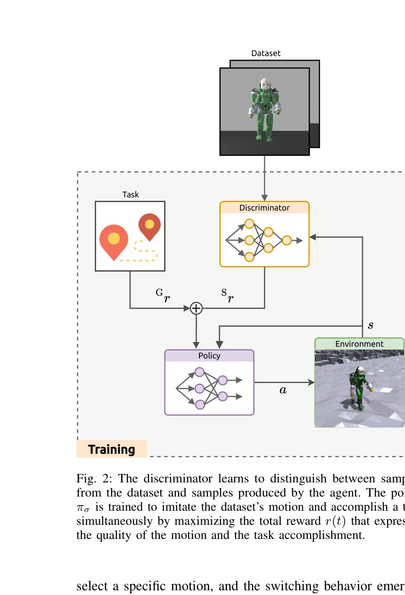
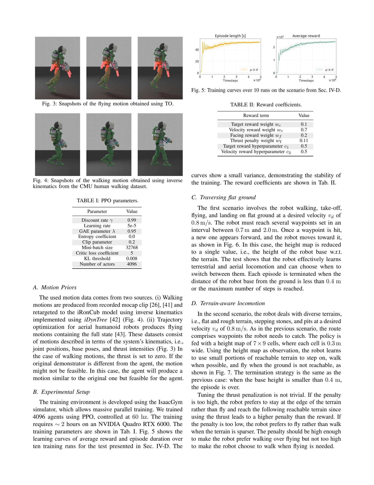

저자: Giuseppe L'Erario, Drew Hanover, Angel Romero, Yunlong Song, Gabriele Nava, Paolo Maria Viceconte, Daniele Pucci, Davide Scaramuzza | 날짜: 2023-09-22 | URL: https://arxiv.org/abs/2309.12784

Fig. 2: The discriminator learns to distinguish between samples
본 논문은 Adversarial Motion Priors(AMP)와 강화학습을 결합하여 항공 인형로봇(aerial humanoid robot)이 인간 같은 보행과 비행 사이를 자동으로 전환하도록 학습하는 방법을 제시한다. 복잡한 보상 함수 없이 동작 데이터셋을 모방하면서 과제를 수행하며, 환경 피드백에 따라 locomotion 모드가 자발적으로 전환된다.

Fig. 4: Snapshots of the walking motion obtained using inverse
Fig. 2: The discriminator learns to distinguish between samples
총평: 본 논문은 AMP와 강화학습의 결합을 통해 항공 인형로봇의 multimodal locomotion에서 자동 mode-switching이라는 미해결 문제를 우아하게 해결한 높은 수준의 연구이다. 비록 시뮬레이션 환경에 한정되어 있지만, 기술적 혁신성, 문제 해결의 우수성, 그리고 실제 응용 가능성 측면에서 로봇공학 분야에 의미 있는 기여를 한다.